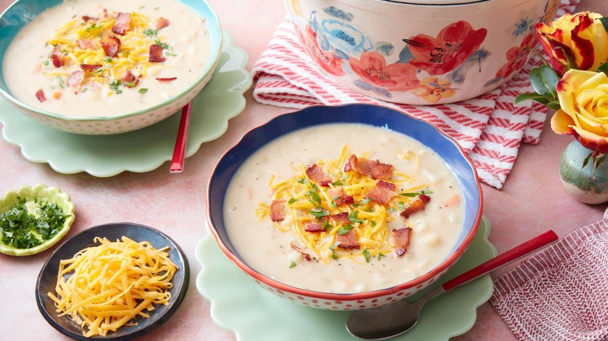

Potato Soup

Ingredients
- potato
- onion
- leek
- chive
- chicken broth
- heavy cream
- cheddar cheese
- bacon
- cook onions and leeks with oil in a pot until softened
- add potato and chicken broth and bring to a boil
- boil until potatoes are cooked and soft
- blend the mixture until smoothed to preference
- add heavy cream to desired creaminess
- garnish with chopped chive, crushed bacon, and shredded cheddar
- add whatever seasoning to taste